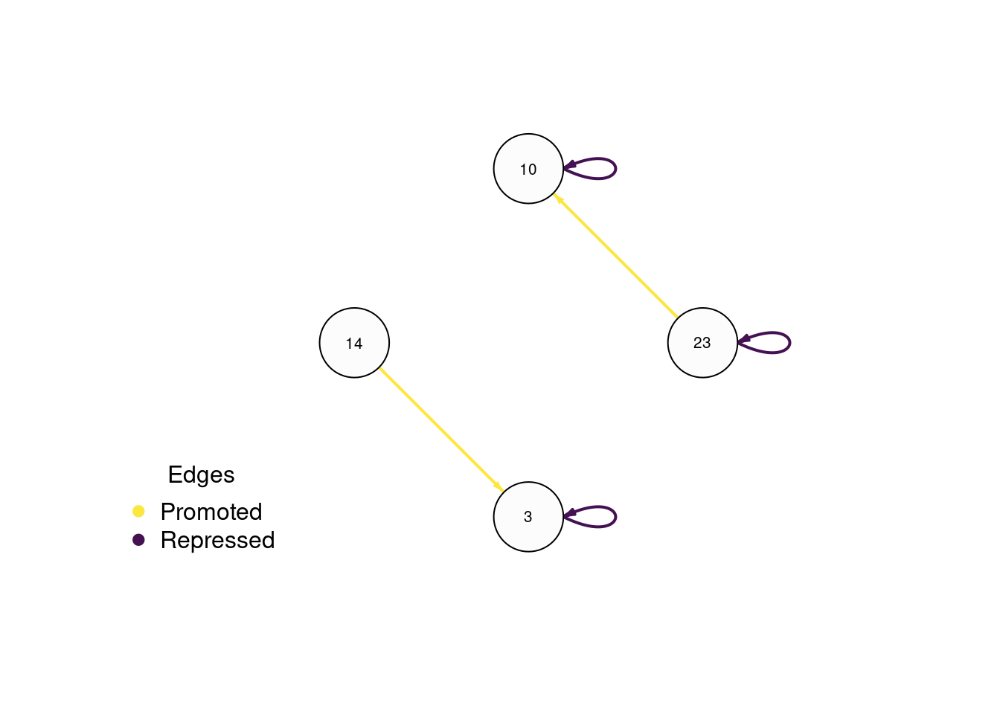

Chapter 4 Repeated-signal problem analysis
Here, we give an overview of the repeated-signal diagnostic problem, and we provide our data analyses for related experiments. All of our source code for statistical analyses and data visualizations is embedded in this document. The raw data can be found on the OSF project associated with this work (link coming).
Please file an issue or make a pull request on github to report any mistakes, ask questions, request more explanation, et cetera.
4.1 Overview
# Experimental parameters referenced in-text all in one convenient place.
time_steps <- 128
replicates <- 200
population_size <- 1000
generations <- 10000
env_complexities <- c(2, 4, 8, 16)
# Settings for statistical analyses.
alpha <- 0.05
correction_method <- "bonferroni"
# Relative location of data.
working_directory <- "experiments/2020-11-25-rep-sig/analysis/" # << For bookdown
# working_directory <- "./" # << For local analysisThe repeated-signal problem requires programs to output the appropriate (distinct) response to a single environmental signal each of the \(K\) times the signal is repeated.
Programs output responses by executing one of \(K\) response instructions.
For example, if a program receives two signals from the environment during evaluation (i.e., \(K=2\)), the program should execute Response-1 after the first signal and Response-2 after the second signal.

We afford programs 128 time steps to respond to each environmental signal. Once the allotted time expires or the program executes any response, the program’s threads of execution are reset, resulting in a loss of all thread-local memory; only the contents of the global memory buffer and each program module’s regulatory state persist. The environment then produces the next signal (identical to each previous environmental signal) to which the program may respond. A program must use the global memory buffer or genetic regulation to correctly shift its response to each subsequent environmental signal. Evaluation continues in this way until the program correctly responds to each of the \(K\) environmental signals or until the program executes an incorrect response. A program’s fitness equals the number of correct responses given during evaluation, and a program is considered a solution if it correctly responds to each of the \(K\) environmental signals.
4.2 Analysis Dependencies
Load all required R libraries.
library(ggplot2)
library(tidyverse)
library(reshape2)
library(cowplot)
library(viridis)
library(igraph)
source("https://gist.githubusercontent.com/benmarwick/2a1bb0133ff568cbe28d/raw/fb53bd97121f7f9ce947837ef1a4c65a73bffb3f/geom_flat_violin.R")These analyses were conducted in the following computing environment:
print(version)## _
## platform x86_64-pc-linux-gnu
## arch x86_64
## os linux-gnu
## system x86_64, linux-gnu
## status
## major 4
## minor 0.2
## year 2020
## month 06
## day 22
## svn rev 78730
## language R
## version.string R version 4.0.2 (2020-06-22)
## nickname Taking Off Again4.3 Setup
Load data, initial data cleanup, configure some global settings.
max_fit_org_data_loc <- paste0(working_directory, "data/max_fit_orgs_noprogram.csv")
reg_network_data_loc <- paste0(working_directory, "data/reg_graphs_summary.csv")
inst_exec_data_loc <- paste0(working_directory, "data/exec_trace_summary.csv")
####### Load max fit program data #######
max_fit_org_data <- read.csv(max_fit_org_data_loc, na.strings="NONE")
# Specify factors (not all of these matter for this set of runs).
max_fit_org_data$matchbin_thresh <- factor(
max_fit_org_data$matchbin_thresh,
levels=c(0, 25, 50, 75)
)
max_fit_org_data$NUM_SIGNAL_RESPONSES <- factor(
max_fit_org_data$NUM_SIGNAL_RESPONSES,
levels=c(2, 4, 8, 16, 32)
)
max_fit_org_data$NUM_ENV_CYCLES <- factor(
max_fit_org_data$NUM_ENV_CYCLES,
levels=c(2, 4, 8, 16, 32)
)
max_fit_org_data$TAG_LEN <- factor(
max_fit_org_data$TAG_LEN,
levels=c(32, 64, 128, 256)
)
# Define function to summarize regulation/memory configurations.
get_con <- function(reg, mem) {
if (reg == "0" && mem == "0") {
return("none")
} else if (reg == "0" && mem=="1") {
return("memory")
} else if (reg=="1" && mem=="0") {
return("regulation")
} else if (reg=="1" && mem=="1") {
return("both")
} else {
return("UNKNOWN")
}
}
# Specify experimental condition for each datum.
max_fit_org_data$condition <- mapply(
get_con,
max_fit_org_data$USE_FUNC_REGULATION,
max_fit_org_data$USE_GLOBAL_MEMORY
)
max_fit_org_data$condition <- factor(
max_fit_org_data$condition,
levels=c("regulation", "memory", "none", "both")
)
# Does this program rely on a stochastic strategy?
max_fit_org_data$stochastic <- 1 - max_fit_org_data$consistent
max_fit_org_data$stochastic <- factor(
max_fit_org_data$stochastic,
levels=c(0, 1)
)
# Filter data to include only runs from regulation-enabled ('both') and regulation-disabled ('memory') conditions
max_fit_org_data <- filter(max_fit_org_data, condition %in% c("both", "memory"))
# Filter data to include only replicates labeled as solutions
sol_data <- filter(max_fit_org_data, solution=="1")
# Label solution strategies
get_strategy <- function(use_reg, use_mem) {
if (use_reg=="0" && use_mem=="0") {
return("use neither")
} else if (use_reg=="0" && use_mem=="1") {
return("use memory")
} else if (use_reg=="1" && use_mem=="0") {
return("use regulation")
} else if (use_reg=="1" && use_mem=="1") {
return("use both")
} else {
return("UNKNOWN")
}
}
# Specify experimental conditions (to make labeling easier).
sol_data$strategy <- mapply(
get_strategy,
sol_data$relies_on_regulation,
sol_data$relies_on_global_memory
)
sol_data$strategy <- factor(
sol_data$strategy,
levels=c(
"use regulation",
"use memory",
"use neither",
"use both"
)
)
####### Load network data #######
reg_network_data <- read.csv(reg_network_data_loc, na.strings="NA")
reg_network_data <- filter(reg_network_data, run_id %in% max_fit_org_data$SEED)
# Make a lookup function to get each run's environment complexity level.
get_num_sig_resps <- function(seed) {
return(filter(max_fit_org_data, SEED==seed)$NUM_SIGNAL_RESPONSES)
}
reg_network_data$NUM_SIGNAL_RESPONSES <- mapply(
get_num_sig_resps,
reg_network_data$run_id
)
reg_network_data$NUM_SIGNAL_RESPONSES <- factor(reg_network_data$NUM_SIGNAL_RESPONSES)
####### Load instruction execution data #######
inst_exec_data <- read.csv(inst_exec_data_loc, na.strings="NA")
inst_exec_data$condition <- mapply(
get_con,
inst_exec_data$USE_FUNC_REGULATION,
inst_exec_data$USE_GLOBAL_MEMORY
)
inst_exec_data$condition <- factor(
inst_exec_data$condition,
levels=c("regulation", "memory", "none", "both")
)
inst_exec_data$NUM_SIGNAL_RESPONSES <- factor(
inst_exec_data$NUM_SIGNAL_RESPONSES,
levels=c(2, 4, 8, 16, 32)
)
inst_exec_data$NUM_ENV_CYCLES <- factor(
inst_exec_data$NUM_ENV_CYCLES,
levels=c(2, 4, 8, 16, 32)
)
# Labels for each
label_lu <- c(
"2" = "2-signal task",
"4" = "4-signal task",
"8" = "8-signal task",
"16" = "16-signal task",
"32" ="32-signal task"
)
####### misc #######
# Configure our default graphing theme
theme_set(theme_cowplot())4.4 Problem-solving success
We expected populations with access to genetic regulation to be more successful on the repeated-signal task than those evolved without access to genetic regulation. Further, we expected the success differential to increase with problem difficulty.
We can look at (1) the number of successful replicates (i.e., replicates in which a program capable of perfectly solving the repeated signal task evolved) per condition and (2) the scores of the highest-fitness program evolved in each replicate.
4.4.1 Number of successful replicates by condition
Note that a program is categorized as a ‘solution’ only if it can correctly respond to each of repetition of the environment signal.
# Graph the number of solutions evolved in each condition, faceted by environmental complexity
ggplot( sol_data, aes(x=condition, fill=condition) ) +
geom_bar() +
geom_text(
stat="count",
mapping=aes(label=..count..),
position=position_dodge(0.9),
vjust=0
) +
scale_y_continuous(
name="# evolved solutions",
breaks=seq(0, replicates, 50),
limits=c(0, replicates+2)
) +
scale_fill_discrete(
name="Condition:",
limits=c("memory", "both"),
labels=c("Regulation-disabled (D)", "Regulation-enabled (E)")
) +
scale_x_discrete(
name="Condition",
limits=c("memory", "both"),
labels=c("D", "E")
) +
facet_wrap(
~ NUM_SIGNAL_RESPONSES,
nrow=1,
labeller=labeller(NUM_SIGNAL_RESPONSES=label_lu)
) +
ggtitle("Solution Counts") +
theme(
legend.position="bottom",
axis.title.x=element_blank()
) +
ggsave(
paste0(working_directory, "imgs/repeated-signal-solultion-cnts.png"),
width=8,
height=4
)
We confirmed that each difficulty level of the repeated-signal problem is solvable without regulation using hand-coded SignalGP programs.
We use a Fisher’s exact test to determine if there are significant differences (p < 0.05) between the numbers of regulation-enabled versus regulation-disabled solutions for each problem difficulty.
# This code chunk is sort of a monster to have things print out all pretty-like in the knitted HTML document.
# For each environment complexity level, do a fisher's exact test and print results.
for (env in env_complexities) {
env_data <- filter(max_fit_org_data, NUM_SIGNAL_RESPONSES==env)
cat("#### ", paste0(env, "-signal task"), " - statistical analysis of solution counts \n")
# Extract successes/fails for each condition.
mem_success_cnt <- nrow(filter(env_data, solution=="1" & condition=="memory"))
mem_fail_cnt <- nrow(filter(env_data, condition=="memory")) - mem_success_cnt
both_success_cnt <- nrow(filter(env_data, solution=="1" & condition=="both"))
both_fail_cnt <- nrow(filter(env_data, condition=="both")) - both_success_cnt
# Regulation-disabled vs regulation-enabled
mem_sgp_table <- matrix(c(both_success_cnt,
mem_success_cnt,
both_fail_cnt,
mem_fail_cnt),
nrow=2)
rownames(mem_sgp_table) <- c("reg-enabled", "reg-disabled")
colnames(mem_sgp_table) <- c("success", "fail")
mem_sgp_fishers <- fisher.test(mem_sgp_table)
cat("\n")
cat("Regulation-enabled SignalGP vs. regulation-disabled SignalGP (original version of SignalGP): \n")
cat("```\n")
print(mem_sgp_table)
print(mem_sgp_fishers)
cat("```\n")
cat("\n")
}4.4.1.1 2-signal task - statistical analysis of solution counts
Regulation-enabled SignalGP vs. regulation-disabled SignalGP (original version of SignalGP):
success fail
reg-enabled 200 0
reg-disabled 137 63
Fisher's Exact Test for Count Data
data: mem_sgp_table
p-value < 2.2e-16
alternative hypothesis: true odds ratio is not equal to 1
95 percent confidence interval:
23.54182 Inf
sample estimates:
odds ratio
Inf
4.4.1.2 4-signal task - statistical analysis of solution counts
Regulation-enabled SignalGP vs. regulation-disabled SignalGP (original version of SignalGP):
success fail
reg-enabled 200 0
reg-disabled 8 192
Fisher's Exact Test for Count Data
data: mem_sgp_table
p-value < 2.2e-16
alternative hypothesis: true odds ratio is not equal to 1
95 percent confidence interval:
953.6049 Inf
sample estimates:
odds ratio
Inf
4.4.1.3 8-signal task - statistical analysis of solution counts
Regulation-enabled SignalGP vs. regulation-disabled SignalGP (original version of SignalGP):
success fail
reg-enabled 198 2
reg-disabled 0 200
Fisher's Exact Test for Count Data
data: mem_sgp_table
p-value < 2.2e-16
alternative hypothesis: true odds ratio is not equal to 1
95 percent confidence interval:
2409.412 Inf
sample estimates:
odds ratio
Inf
4.4.1.4 16-signal task - statistical analysis of solution counts
Regulation-enabled SignalGP vs. regulation-disabled SignalGP (original version of SignalGP):
success fail
reg-enabled 74 126
reg-disabled 0 200
Fisher's Exact Test for Count Data
data: mem_sgp_table
p-value < 2.2e-16
alternative hypothesis: true odds ratio is not equal to 1
95 percent confidence interval:
30.12902 Inf
sample estimates:
odds ratio
Inf
4.4.2 Aggregate fitness scores by condition
Here, we visualize the raw task scores for the highest-fitness program from each run across all environments/conditions.
ggplot( max_fit_org_data, aes(x=condition, y=score, color=condition) ) +
geom_boxplot() +
geom_jitter(alpha=0.2) +
ylab("Score (# correct responses)") +
scale_color_discrete(
name="Condition",
breaks=c("memory", "both"),
labels=c("Regulation-disabled (D)", "Regulation-enabled (E)")
) +
scale_x_discrete(
name="Condition",
breaks=c("memory", "both"),
labels=c("D", "E")
) +
facet_wrap(
~ NUM_SIGNAL_RESPONSES,
scales="free_y",
labeller=labeller(NUM_SIGNAL_RESPONSES=label_lu)
) +
theme(
legend.position="bottom",
axis.title.x=element_blank()
) +
ggtitle("Task Scores") +
ggsave(
paste0(working_directory, "imgs/repeated-signal-scores.png"),
width=16,
height=8
)
4.5 How many generations elapse before solutions evolve?
Do some conditions lead to the evolution of solutions in fewer generations than other conditions?
Here, we compare the generation at which solutions arise (only at difficulty levels where regulation-disabled solutions evovled).
ggplot( data = filter(sol_data, NUM_SIGNAL_RESPONSES %in% c(2, 4)), aes(x=condition, y=update, fill=condition) ) +
geom_flat_violin(
position = position_nudge(x = .2, y = 0),
alpha = .8
) +
geom_point(
aes(y=update, color=condition),
position = position_jitter(width = .15),
size = .5,
alpha = 0.8
) +
geom_boxplot(
width = .1,
outlier.shape = NA,
alpha = 0.5
) +
scale_x_discrete(
name="Condition",
breaks=c("memory", "both"),
labels=c("Regulation-\ndisabled", "Regulation-enabled")
) +
scale_y_continuous(
name="Generation first solution evolved \n(log scale)",
limits=c(0, generations),
breaks=c(0, 10, 100, 1000, 10000),
trans="pseudo_log"
) +
facet_wrap(
~ NUM_SIGNAL_RESPONSES,
nrow=1,
labeller=labeller(NUM_SIGNAL_RESPONSES=label_lu)
) +
guides(fill = FALSE) +
guides(color = FALSE) +
ggsave(
paste0(working_directory, "./imgs/repeated-signal-solve-time-cloud.png"),
width=5,
height=4
)## Warning: Removed 94 rows containing missing values (geom_point).
## Warning: Removed 94 rows containing missing values (geom_point).
4.5.1 Two-signal task - statistical analysis
We compare the time to solution using a Wilcoxon rank-sum test.
env_2_sol_data <- filter(
sol_data,
NUM_SIGNAL_RESPONSES==2
)
print(wilcox.test(formula=update~condition, data=env_2_sol_data, exact=FALSE, conf.int=TRUE))##
## Wilcoxon rank sum test with continuity correction
##
## data: update by condition
## W = 24940, p-value < 2.2e-16
## alternative hypothesis: true location shift is not equal to 0
## 95 percent confidence interval:
## 6.000004 11.000006
## sample estimates:
## difference in location
## 7.9999634.5.2 Four-signal task - statistical analysis
We compare the time to solution using a Wilcoxon rank-sum test.
env_4_sol_data <- filter(
sol_data,
NUM_SIGNAL_RESPONSES==4
)
print(wilcox.test(formula=update~condition, data=env_4_sol_data, exact=FALSE, conf.int=TRUE))##
## Wilcoxon rank sum test with continuity correction
##
## data: update by condition
## W = 1456, p-value = 8.603e-05
## alternative hypothesis: true location shift is not equal to 0
## 95 percent confidence interval:
## 173 738
## sample estimates:
## difference in location
## 319.6364.6 Teasing apart evolved strategies
We analyzed:
- mechanisms underlying capacity to adjust responses to input signals (using knockout experiments)
- whether programs used stochasticity as part of their strategy
- instruction execution traces
4.6.1 Do solutions rely on genetic regulation or global memory access to dynamically adjust responses?
Here, we take a closer at the strategies employed by solutions evolved across environment complexities. For each evolved solution, we independently knocked out (disabled) tag-based regulation and global memory access, and we measured the fitness effects knocking each out. If a knockout resulted in a decrease in fitness, we labeled that program as relying on that functionality (global memory or genetic regulation) for success.
The graph(s) below gives the proportion of solutions that rely exclusively on regulation, exclusively on global memory, on both global memory and regulation, and on neither functionality.
Proportions as stacked bar chart:
ggplot( data=sol_data, mapping=aes(x=NUM_SIGNAL_RESPONSES, fill=strategy) ) +
geom_bar(
position="fill"
) +
ylab("# of Solutions") +
xlab("Environment Complexity") +
scale_fill_discrete(
name="Strategy:",
breaks=c("use regulation",
"use memory",
"use neither",
"use both"),
labels=c("Use regulation (only)",
"Use global memory (only)",
"Use neither",
"Use both")
) +
facet_wrap(~condition)
As fun donuts(?!):
# https://www.r-graph-gallery.com/128-ring-or-donut-plot.html
donut_data <- data.frame(
env=character(),
count=numeric(),
category=character()
)
for (env in env_complexities) {
env_donut_data <- data.frame(
env=c(env, env, env, env),
count=c(
nrow(filter(sol_data, condition=="both" & NUM_SIGNAL_RESPONSES==env & strategy=="use neither")),
nrow(filter(sol_data, condition=="both" & NUM_SIGNAL_RESPONSES==env & strategy=="use memory")),
nrow(filter(sol_data, condition=="both" & NUM_SIGNAL_RESPONSES==env & strategy=="use regulation")),
nrow(filter(sol_data, condition=="both" & NUM_SIGNAL_RESPONSES==env & strategy=="use both"))
),
category=c("neither", "memory", "regulation", "both")
)
env_donut_data <- filter(env_donut_data, count > 0)
env_donut_data$fraction <- env_donut_data$count / sum(env_donut_data$count)
env_donut_data$ymax <- cumsum(env_donut_data$fraction)
env_donut_data$ymin <- c(0, head(env_donut_data$ymax, n=-1))
env_donut_data$labelPosition <- (env_donut_data$ymax + env_donut_data$ymin) / 2
env_donut_data$label <- paste0(env_donut_data$count)
donut_data<-rbind(donut_data, env_donut_data)
}
ggplot( donut_data, aes(ymax=ymax, ymin=ymin, xmax=4, xmin=3, fill=category) ) +
geom_rect() +
geom_label( x=4, aes(y=labelPosition, label=label), size=4, show.legend = FALSE) +
coord_polar(theta="y") +
xlim(c(-1, 4)) +
scale_fill_discrete(
name="Strategy:",
limits=c("regulation",
"memory",
"both"),
labels=c("Use regulation (only)",
"Use global memory (only)",
"Use both")) +
theme_void() +
theme(legend.position = "bottom") +
facet_wrap(
~env,
nrow=1,
labeller=labeller(env=label_lu)
)
We can see that in conditions where programs have access to regulation, evolved solutions generally rely on regulation to adjust their responses to input signals. In conditions where memory is the only mechanism for solving the repeated-signal task, we see that all evolved solutions rely exclusively on global memory access for adjusting responses to input signals.
4.6.2 What forms of genetic regulation do evolved programs rely on?
We used two approaches to tease apart forms of genetic regulation that evolved SignalGP programs rely on:
- We traced program execution step-by-step (including each function’s regulatory state) during evaluation on the repeated signal task and extracted regulatory interactions between executing functions as a directed graph. We draw a directed edge from function A to function B if B’s regulatory state changes while A is executing. We label each edge as up- or down-regulation. The distribution of edge types in these graphs hints at what strategy the program is using.
- We independently knockout up-regulation and down-regulation and record the fitness of knockout-variants. If fitness decreases when a target functionality is knocked out, we categorize the program as relying on that functionality.
Note that the knockout data more directly indicates which forms of regulation a program relies on, as the gene regulation networks may include neutral and non-adaptive regulatory interactions.
4.6.2.1 Gene regulatory network edges
Let’s only look at programs that solved the repeated-signal task and rely on regulation.
First, total edges as a function of problem difficulty.
relies_on_reg <- filter(
sol_data,
relies_on_regulation=="1"
)$SEED
ggplot( filter(reg_network_data, run_id %in% relies_on_reg ), aes(x=NUM_SIGNAL_RESPONSES, y=edge_cnt) ) +
geom_boxplot() +
geom_jitter(alpha=0.1) +
xlab("Environmental Complexity") +
ylab("# Edges") +
theme(
legend.position="bottom",
legend.text=element_text(size=9),
legend.title=element_text(size=10),
axis.title.x=element_text(size=12)
) +
ggsave(
paste0(working_directory, "imgs/repeated-signal-regulation-edges.png"),
width=4,
height=3
)
Next, let’s look at edges by type.
# Get seeds (run ids) of replicates that rely on regulation and are a solution.
melted_network_data <- melt(
filter(reg_network_data, run_id %in% relies_on_reg),
variable.name = "reg_edge_type",
value.name = "reg_edges_cnt",
measure.vars=c("repressed_edges_cnt", "promoted_edges_cnt")
)
ggplot( melted_network_data, aes(x=NUM_SIGNAL_RESPONSES, y=reg_edges_cnt, color=reg_edge_type) ) +
geom_boxplot() +
xlab("Environmental Complexity") +
ylab("# Edges") +
scale_color_discrete(
name="Edge type:",
limits=c("repressed_edges_cnt", "promoted_edges_cnt"),
labels=c("Repressing edges", "Promoting edges")
) +
theme(
legend.position="bottom",
legend.text=element_text(size=9),
legend.title=element_text(size=10),
axis.title.x=element_text(size=12)
) +
ggsave(
paste0(working_directory, "imgs/repeated-signal-regulation-edge-types.png"),
width=4,
height=3
)
for (env in env_complexities) {
print(paste("Environment", env))
print(paste0(" Median repressing edges: ", median(filter(melted_network_data, NUM_SIGNAL_RESPONSES==env & reg_edge_type=="repressed_edges_cnt")$reg_edges_cnt)))
print(paste0(" Median promoting edges: ", median(filter(melted_network_data, NUM_SIGNAL_RESPONSES==env & reg_edge_type=="promoted_edges_cnt")$reg_edges_cnt)))
wt <- wilcox.test(
formula=reg_edges_cnt ~ reg_edge_type,
data=filter(melted_network_data, NUM_SIGNAL_RESPONSES==env),
exact=FALSE,
conf.int=TRUE
)
print(wt)
}## [1] "Environment 2"
## [1] " Median repressing edges: 3"
## [1] " Median promoting edges: 2"
##
## Wilcoxon rank sum test with continuity correction
##
## data: reg_edges_cnt by reg_edge_type
## W = 21990, p-value = 8.308e-05
## alternative hypothesis: true location shift is not equal to 0
## 95 percent confidence interval:
## 6.294052e-06 1.000039e+00
## sample estimates:
## difference in location
## 0.9999429
##
## [1] "Environment 4"
## [1] " Median repressing edges: 6"
## [1] " Median promoting edges: 3"
##
## Wilcoxon rank sum test with continuity correction
##
## data: reg_edges_cnt by reg_edge_type
## W = 30971, p-value < 2.2e-16
## alternative hypothesis: true location shift is not equal to 0
## 95 percent confidence interval:
## 2.999916 3.999984
## sample estimates:
## difference in location
## 3.000027
##
## [1] "Environment 8"
## [1] " Median repressing edges: 9"
## [1] " Median promoting edges: 3"
##
## Wilcoxon rank sum test with continuity correction
##
## data: reg_edges_cnt by reg_edge_type
## W = 34138, p-value < 2.2e-16
## alternative hypothesis: true location shift is not equal to 0
## 95 percent confidence interval:
## 5.000045 6.000012
## sample estimates:
## difference in location
## 5.999952
##
## [1] "Environment 16"
## [1] " Median repressing edges: 16"
## [1] " Median promoting edges: 4"
##
## Wilcoxon rank sum test with continuity correction
##
## data: reg_edges_cnt by reg_edge_type
## W = 4984, p-value < 2.2e-16
## alternative hypothesis: true location shift is not equal to 0
## 95 percent confidence interval:
## 11.00002 13.00001
## sample estimates:
## difference in location
## 12.000034.6.2.2 Knockout experiments
Do successful programs rely on:
- neither up- nor down-regulation?
- either up- or down-regulation interchangeably?
- only on down-regulation?
- only on up-regulation?
# Limit the genotypes we're looking at to just solutions from the 'both' and 'regulation' conditions.
relies_on_reg_orgs <- filter(
max_fit_org_data,
solution=="1" & relies_on_regulation=="1"
)Note that there are 661 total programs represented in the graphs below.
# Data processing/clean up
get_reg_relies_on <- function(uses_down, uses_up, uses_reg) {
if (uses_down == "0" && uses_up == "0" && uses_reg == "0") {
return("neither")
} else if (uses_down == "0" && uses_up == "0" && uses_reg == "1") {
return("either")
} else if (uses_down == "0" && uses_up == "1") {
return("up-regulation-only")
} else if (uses_down == "1" && uses_up == "0") {
return("down-regulation-only")
} else if (uses_down == "1" && uses_up == "1") {
return("up-and-down-regulation")
} else {
return("UNKNOWN")
}
}
relies_on_reg_orgs$regulation_type_usage <- mapply(
get_reg_relies_on,
relies_on_reg_orgs$relies_on_down_reg,
relies_on_reg_orgs$relies_on_up_reg,
relies_on_reg_orgs$relies_on_regulation
)
relies_on_reg_orgs$regulation_type_usage <- factor(
relies_on_reg_orgs$regulation_type_usage,
levels=c(
"neither",
"either",
"up-regulation-only",
"down-regulation-only",
"up-and-down-regulation"
)
)4.6.2.2.1 Regulation usage by environment
ggplot(relies_on_reg_orgs, aes(x=regulation_type_usage, fill=regulation_type_usage)) +
geom_bar() +
geom_text(
stat="count",
aes(label=..count..),
position=position_dodge(0.9),
vjust=0
) +
scale_x_discrete(
name="Regulation Usage",
limits=c(
"neither",
"either",
"up-regulation-only",
"down-regulation-only",
"up-and-down-regulation"
),
labels=c(
"None",
"Either",
"Up\n(only)",
"Down\n(only)",
"Both"
)
) +
facet_wrap(~NUM_SIGNAL_RESPONSES) +
theme(legend.position="none") +
ggtitle("Regulation usage by environment") +
ggsave(
paste0(working_directory, "imgs/rst-reg-usage-by-env.png"),
width=8,
height=6
)
4.6.2.2.2 Regulation usage across all environments
ggplot(relies_on_reg_orgs, aes(x=regulation_type_usage, fill=regulation_type_usage)) +
geom_bar() +
geom_text(
stat="count",
aes(label=..count..),
position=position_dodge(0.9),
vjust=0
) +
scale_x_discrete(
name="Regulation Usage",
limits=c(
"neither",
"either",
"up-regulation-only",
"down-regulation-only",
"up-and-down-regulation"
),
labels=c(
"None",
"Either",
"Up\n(only)",
"Down\n(only)",
"Both"
)
) +
theme(legend.position="none") +
ggtitle("Regulation usage across all environments") +
ggsave(
paste0(working_directory, "imgs/rst-reg-usage-total.png"),
width=8,
height=6
)
4.6.3 Are evolved programs relying on stochastic strategies?
To confirm that evolved programs are not relying on stochastic approaches to solve the repeated signal task, we tested the most fit individual from each replicate at the end of each run three times. If program’s behavior was not identical across each of the three trials, we labeled is as using a stochastic strategy.
ggplot( max_fit_org_data, aes(x=condition, fill=stochastic)) +
geom_bar() +
ggtitle("Stochastic Strategies?") +
ylab("# Replicates") +
ylim(0, replicates) +
scale_fill_discrete(
name="Strategy",
limits=c(0, 1),
labels=c("Deterministic", "Stochastic")
) +
scale_x_discrete(
name="Condition",
breaks=c("memory", "both"),
labels=c("Regulation-\ndisabled", "Regulation-\nenabled")
) +
facet_wrap(
~NUM_SIGNAL_RESPONSES,
labeller=labeller(NUM_SIGNAL_RESPONSES=label_lu)
)## Warning: Continuous limits supplied to discrete scale.
## Did you mean `limits = factor(...)` or `scale_*_continuous()`?
We see no evidence of evolved programs relying on stochastic strategies to solve the repeated signal task: all programs responded consistently across trials. Note, this is unsurprising, as we did not give programs access to instructions capable of generating random values and ensured that the version of SignalGP virtual hardware used in this work operated in a deterministic manner.
4.6.4 Program instruction execution traces
4.6.4.1 Execution time
How many time steps do evolved programs use to solve the repeated-signal task?
# only want solutions
solutions_inst_exec_data <- filter(inst_exec_data, SEED %in% sol_data$SEED)
ggplot( solutions_inst_exec_data, aes(x=condition, y=total_execution_time, color=condition) ) +
geom_boxplot() +
geom_jitter(alpha=0.2) +
scale_color_discrete(
name="Condition: ",
breaks=c("memory", "both"),
labels=c("Regulation-disabled (D)", "Regulation-enabled (E)")
) +
scale_x_discrete(
breaks=c("memory", "both"),
labels=c("D", "E")
) +
facet_wrap(
~ NUM_SIGNAL_RESPONSES,
nrow=1,
labeller=labeller(NUM_SIGNAL_RESPONSES=label_lu)
) +
theme(
legend.position="bottom",
axis.title.x=element_blank()
)
Two-signal task:
print(
wilcox.test(
formula=total_execution_time~condition,
data=filter(solutions_inst_exec_data, NUM_SIGNAL_RESPONSES==2),
exact=FALSE,
conf.int=TRUE)
)##
## Wilcoxon rank sum test with continuity correction
##
## data: total_execution_time by condition
## W = 23102, p-value < 2.2e-16
## alternative hypothesis: true location shift is not equal to 0
## 95 percent confidence interval:
## 38.00000 51.99997
## sample estimates:
## difference in location
## 44.99995Four-signal task:
print(
wilcox.test(
formula=total_execution_time~condition,
data=filter(solutions_inst_exec_data, NUM_SIGNAL_RESPONSES==4),
exact=FALSE,
conf.int=TRUE)
)##
## Wilcoxon rank sum test with continuity correction
##
## data: total_execution_time by condition
## W = 1494.5, p-value = 3.214e-05
## alternative hypothesis: true location shift is not equal to 0
## 95 percent confidence interval:
## 67.99998 112.00000
## sample estimates:
## difference in location
## 89.000024.6.4.2 Distribution of executed instruction types
Here, we look at the distribution of instruction types that programs execute during evaluation. For this work, we are primarily interested in the proportions of control flow instructions executed.
ggplot( solutions_inst_exec_data, aes(x=condition, y=control_flow_inst_prop, color=condition) ) +
geom_boxplot() +
geom_jitter(alpha=0.2) +
scale_color_discrete(
name="Condition: ",
breaks=c("memory", "both"),
labels=c("Regulation-disabled (D)", "Regulation-enabled (E)")
) +
scale_x_discrete(
breaks=c("memory", "both"),
labels=c("D", "E")
) +
ylab("Proportion of executed flow control instructions") +
facet_wrap(
~ NUM_SIGNAL_RESPONSES,
nrow=1,
labeller=labeller(NUM_SIGNAL_RESPONSES=label_lu)
) +
theme(
legend.position="bottom",
axis.title.x=element_blank()
)
Two-signal task statistical comparison:
print(
wilcox.test(
formula=control_flow_inst_prop~condition,
data=filter(solutions_inst_exec_data, NUM_SIGNAL_RESPONSES==2),
exact=FALSE,
conf.int=TRUE)
)##
## Wilcoxon rank sum test with continuity correction
##
## data: control_flow_inst_prop by condition
## W = 19580, p-value = 2.118e-11
## alternative hypothesis: true location shift is not equal to 0
## 95 percent confidence interval:
## 0.02022011 0.03692075
## sample estimates:
## difference in location
## 0.02817524Four-signal task statistical comparison:
print(
wilcox.test(
formula=control_flow_inst_prop~condition,
data=filter(solutions_inst_exec_data, NUM_SIGNAL_RESPONSES==4),
exact=FALSE,
conf.int=TRUE)
)##
## Wilcoxon rank sum test with continuity correction
##
## data: control_flow_inst_prop by condition
## W = 1292.5, p-value = 0.003185
## alternative hypothesis: true location shift is not equal to 0
## 95 percent confidence interval:
## 0.01577416 0.06398521
## sample estimates:
## difference in location
## 0.04051067In case you’re curious, here’s all categories of instructions:
melted <- melt(
solutions_inst_exec_data,
variable.name = "inst_type",
value.name = "inst_type_prop",
measure.vars=c(
"math_inst_prop",
"module_inst_prop",
"memory_inst_prop",
"regulation_inst_prop",
"control_flow_inst_prop",
"thread_inst_prop",
"task_inst_prop",
"nop_inst_prop"
)
)
ggplot( melted, aes(x=inst_type, y=inst_type_prop, color=condition) ) +
geom_boxplot() +
scale_color_discrete(
name="Condition: ",
breaks=c("memory", "both"),
labels=c("Regulation-disabled (D)", "Regulation-enabled (E)")
) +
xlab("Instruction type") +
ylab("Proportion of instructions in execution trace") +
facet_wrap(
~NUM_SIGNAL_RESPONSES,
nrow=1,
labeller=labeller(NUM_SIGNAL_RESPONSES=label_lu)
) +
coord_flip() +
theme(
legend.position="bottom"
)
4.7 Case study: visualizing regulation in an evolved program
Let’s take a closer look at the behavioral/regulatory profile of a representative program that solves the four-signal version of the repeated signal task.
trace_id <- 20203Specifically, we’ll be looking at the solution evolved in run id 2.0203^{4}.
4.7.1 Data wrangling
case_study_info <- read.csv(
paste0(working_directory, "data/max_fit_orgs_noprogram.csv"),
na.strings="NONE"
)
case_study_info <- filter(
case_study_info,
SEED==trace_id
)
# Extract relevant information about solution of interest.
num_envs <- case_study_info$NUM_SIGNAL_RESPONSES
score <- case_study_info$score
is_sol <- case_study_info$solution
num_modules <- case_study_info$num_modules
# Load trace file associated with this solution.
trace_file <- paste0(working_directory, "data/reg-traces/trace-reg_update-10000_run-id-", trace_id, ".csv")
trace_data <- read.csv(trace_file, na.strings="NONE")
trace_data$similarity_score <- 1 - trace_data$match_score
# Data cleanup/summarizing
trace_data$triggered <- (trace_data$env_signal_closest_match == trace_data$module_id) & (trace_data$cpu_step == "0")
trace_data$is_running <- trace_data$is_running > 0 | trace_data$triggered | trace_data$is_cur_responding_function == "1"
# Extract which modules responded and when
response_time_steps <- levels(factor(filter(trace_data, is_cur_responding_function=="1")$time_step))
responses_by_env_update <- list()
for (t in response_time_steps) {
env_update <- levels(factor(filter(trace_data, time_step==t)$env_cycle))
if (env_update %in% names(responses_by_env_update)) {
if (as.integer(t) > as.integer(responses_by_env_update[env_update])) {
responses_by_env_update[env_update] = t
}
} else {
responses_by_env_update[env_update] = t
}
}
# Build a list of modules that were triggered & those that responded to a signal
triggered_ids <- levels(factor(filter(trace_data, triggered==TRUE)$module_id))
response_ids <- levels(factor(filter(trace_data, is_cur_responding_function=="1")$module_id))
trace_data$is_ever_active <-
trace_data$is_ever_active=="1" |
trace_data$is_running |
trace_data$module_id %in% triggered_ids |
trace_data$module_id %in% response_ids
trace_data$is_cur_responding_function <-
trace_data$is_cur_responding_function=="1" &
trace_data$time_step %in% responses_by_env_update
# function to categorize each regulatory state as promoted, neutral, or repressed
# remember, the regulatory states in our data file operate with tag DISTANCE in mind
# as opposed to tag similarity, so: promotion => reg < 0, repression => reg > 0
categorize_reg_state <- function(reg_state) {
if (reg_state == 0) {
return("neutral")
} else if (reg_state < 0) {
return("promoted")
} else if (reg_state > 0) {
return("repressed")
} else {
return("unknown")
}
}
trace_data$regulator_state_simplified <- mapply(
categorize_reg_state,
trace_data$regulator_state
)
# Omit all in-active rows
# Extract only rows that correspond with modules that were active during evaluation.
active_data <- filter(trace_data, is_ever_active==TRUE)
# Do some work to have module ids appear in a nice order along axis.
active_module_ids <- levels(factor(active_data$module_id))
active_module_ids <- as.integer(active_module_ids)
module_id_map <- as.data.frame(active_module_ids)
module_id_map$order <- order(module_id_map$active_module_ids) - 1
get_module_x_pos <- function(module_id) {
return(filter(module_id_map, active_module_ids==module_id)$order)
}
active_data$mod_id_x_pos <- mapply(get_module_x_pos, active_data$module_id)4.7.2 Function regulation over time
First, let’s omit all non-active funcitons.
Vertical orientation:
out_name <- paste0(
working_directory,
"imgs/case-study-trace-id-",
trace_id,
"-regulator-state-vertical.pdf"
)
ggplot(
active_data,
aes(x=mod_id_x_pos, y=time_step, fill=regulator_state_simplified)
) +
scale_fill_viridis(
name="Regulation:",
limits=c(
"promoted",
"neutral",
"repressed"
),
labels=c(
"+",
"\u00F8",
"-"
),
discrete=TRUE,
direction=-1
) +
scale_x_discrete(
name="Function ID",
limits=seq(0, length(active_module_ids)-1, 1),
labels=active_module_ids
) +
scale_y_discrete(
name="Time Step",
limits=seq(0, 30, 5)
) +
# Background tile color
geom_tile(
color="white",
size=0.2,
width=1,
height=1,
alpha=0.75
) +
# Highlight actively running functions
geom_tile(
data=filter(active_data, is_running==TRUE | triggered==TRUE),
color="black",
size=0.8,
width=1,
height=1
) +
# Environment delimiters
geom_hline(
yintercept=filter(active_data, cpu_step==0)$time_step - 0.5,
size=1.25,
color="black"
) +
# Draw points on triggered modules
geom_point(
data=filter(active_data, triggered==TRUE),
shape=8,
colour="black",
fill="white",
stroke=0.5,
size=1.5,
position=position_nudge(x = 0, y = 0.01)
) +
geom_point(
data=filter(active_data, is_cur_responding_function==TRUE),
shape=21,
colour="black",
fill="white",
stroke=0.5,
size=1.5,
position=position_nudge(x = 0, y = 0.01)
) +
theme(
legend.position = "top",
legend.text = element_text(size=9),
legend.title=element_text(size=8),
axis.text.y = element_text(size=8),
axis.title.y = element_text(size=8),
axis.text.x = element_text(size=8),
axis.title.x = element_text(size=8),
plot.title = element_text(hjust = 0.5)
) +
ggsave(
out_name,
height=3.5,
width=2.25
)## Warning: Continuous limits supplied to discrete scale.
## Did you mean `limits = factor(...)` or `scale_*_continuous()`?
## Warning: Continuous limits supplied to discrete scale.
## Did you mean `limits = factor(...)` or `scale_*_continuous()`?
Horizontal orientation:
out_name <- paste0(working_directory, "imgs/case-study-trace-id-",trace_id,"-regulator-state-horizontal.pdf")
ggplot(active_data, aes(x=mod_id_x_pos, y=time_step, fill=regulator_state_simplified)) +
scale_fill_viridis(
name="Regulation:",
limits=c(
"promoted",
"neutral",
"repressed"
),
labels=c(
"+",
"\u00F8",
"-"
),
discrete=TRUE,
direction=-1
) +
scale_x_discrete(
name="Function ID",
limits=seq(0, length(active_module_ids)-1, 1),
labels=active_module_ids
) +
scale_y_discrete(
name="Time Step",
limits=seq(0, 30, 5)
) +
# Background tile color
geom_tile(
color="white",
size=0.2,
width=1,
height=1,
alpha=0.75
) +
# Highlight actively running functions
geom_tile(
data=filter(active_data, is_running==TRUE | triggered==TRUE),
color="black",
size=0.8,
width=1,
height=1
) +
# Environment delimiters
geom_hline(
yintercept=filter(active_data, cpu_step==0)$time_step - 0.5,
size=1.25,
color="black"
) +
# Draw points on triggered modules
geom_point(
data=filter(active_data, triggered==TRUE),
shape=8,
colour="black",
fill="white",
stroke=0.5,
size=1.5,
position=position_nudge(x = 0, y = 0.01)
) +
geom_point(
data=filter(active_data, is_cur_responding_function==TRUE),
shape=21,
colour="black",
fill="white",
stroke=0.5,
size=1.5,
position=position_nudge(x = 0, y = 0.01)
) +
theme(
legend.position = "top",
legend.text = element_text(size=9),
legend.title=element_text(size=8),
axis.text.y = element_text(size=8),
axis.title.y = element_text(size=8),
axis.text.x = element_text(size=8),
axis.title.x = element_text(size=8),
plot.title = element_text(hjust = 0.5)
) +
coord_flip() +
ggsave(out_name, height=2.25, width=4)## Warning: Continuous limits supplied to discrete scale.
## Did you mean `limits = factor(...)` or `scale_*_continuous()`?
## Warning: Continuous limits supplied to discrete scale.
## Did you mean `limits = factor(...)` or `scale_*_continuous()`?
4.7.3 Environmental signal tag-match score over time
Again, we’ll omit unexecuted functions.
out_name <- paste0(working_directory, "imgs/case-study-trace-id-", trace_id, "-similarity-score.pdf", sep="")
ggplot(active_data, aes(x=mod_id_x_pos, y=time_step, fill=similarity_score)) +
scale_fill_viridis(
option="plasma",
name="Score: "
) +
scale_x_discrete(
name="Function ID",
limits=seq(0, length(active_module_ids)-1, 1),
labels=active_module_ids
) +
scale_y_discrete(
name="Time Step",
limits=seq(0, 30, 10)
) +
# Background
geom_tile(
color="white",
size=0.2,
width=1,
height=1
) +
# Module is-running highlights
geom_tile(
data=filter(active_data, is_running==TRUE | triggered==TRUE),
color="black",
width=1,
height=1,
size=0.8
) +
# Environment delimiters
geom_hline(
yintercept=filter(active_data, cpu_step==0)$time_step-0.5,
size=1
) +
# Draw points on triggered modules
geom_point(
data=filter(active_data, triggered==TRUE),
shape=8,
colour="black",
fill="white",
stroke=0.5,
size=1.5,
position=position_nudge(x = 0, y = 0.01)
) +
geom_point(
data=filter(active_data, is_cur_responding_function==TRUE),
shape=21,
colour="black",
fill="white",
stroke=0.5,
size=1.5,
position=position_nudge(x = 0, y = 0.01)
) +
theme(
legend.position = "top",
legend.text = element_text(size=8),
axis.text.y = element_text(size=8),
axis.text.x = element_text(size=8)
) +
guides(fill = guide_colourbar(barwidth = 10, barheight = 0.5)) +
ggtitle("Function Match Scores") +
ggsave(out_name, height=3, width=4)## Warning: Continuous limits supplied to discrete scale.
## Did you mean `limits = factor(...)` or `scale_*_continuous()`?
## Warning: Continuous limits supplied to discrete scale.
## Did you mean `limits = factor(...)` or `scale_*_continuous()`?
4.7.4 Evolved regulatory network
We use the igraph package to draw this program’s gene regulatory network.
# Networks!
graph_nodes_loc <- paste0(working_directory, "data/igraphs/reg_graph_id-", trace_id, "_nodes.csv")
graph_edges_loc <- paste0(working_directory, "data/igraphs/reg_graph_id-", trace_id, "_edges.csv")
graph_nodes_data <- read.csv(graph_nodes_loc, na.strings="NONE")## Warning in read.table(file = file, header = header, sep = sep, quote = quote, :
## incomplete final line found by readTableHeader on 'experiments/2020-11-25-rep-
## sig/analysis/data/igraphs/reg_graph_id-20203_nodes.csv'graph_edges_data <- read.csv(graph_edges_loc, na.strings="NONE")
network <- graph_from_data_frame(
d=graph_edges_data,
vertices=graph_nodes_data,
directed=TRUE
)
# Setup edge styling
E(network)$color[E(network)$type == "promote"] <- "#FCE640"
E(network)$lty[E(network)$type == "promote"] <- 1
E(network)$color[E(network)$type == "repress"] <- "#441152"
E(network)$lty[E(network)$type == "repress"] <- 1
network_out_name <- paste0(working_directory, "imgs/case-study-id-", trace_id, "-network.svg")
draw_network <- function(net, write_out, out_name) {
if (write_out) {
svg(out_name, width=4,height=1.5)
# bottom, left, top, right
par(mar=c(0.2,0,1,0.5))
}
plot(
net,
edge.arrow.size=0.4,
edge.arrow.width=0.75,
edge.width=2,
vertex.size=40,
vertex.label.cex=0.65,
curved=TRUE,
vertex.color="grey99",
vertex.label.color="black",
vertex.label.family="sans",
layout=layout.circle(net)
)
legend(
x = "bottomleft", ## position, also takes x,y coordinates
legend = c("Promoted", "Repressed"),
pch = 19, ## legend symbols see ?points
col = c("#FCE640", "#441152"),
bty = "n",
border="black",
xpd=TRUE,
title = "Edges"
)
if (write_out) {
dev.flush()
dev.off()
}
}
draw_network(network, TRUE, network_out_name)## png
## 2draw_network(network, FALSE, "")